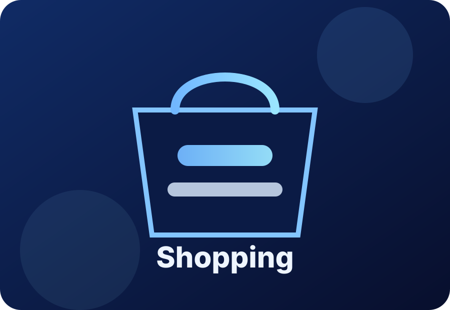
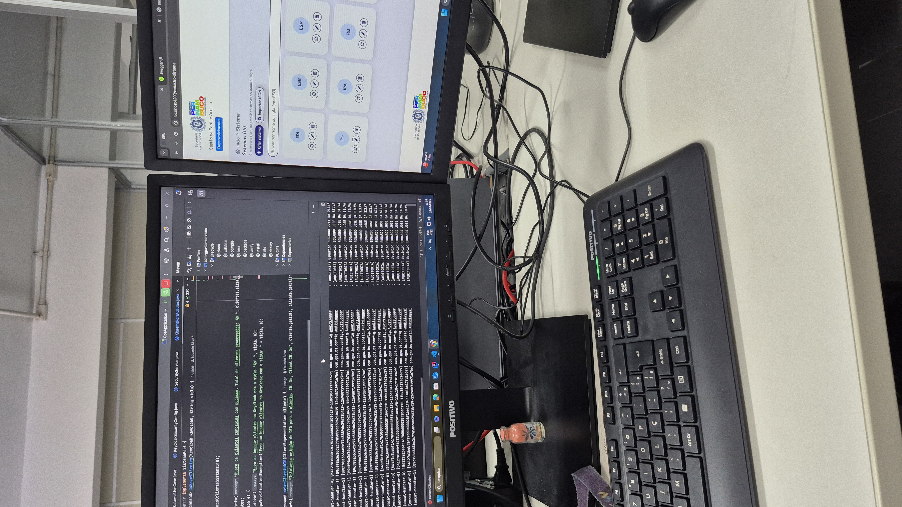
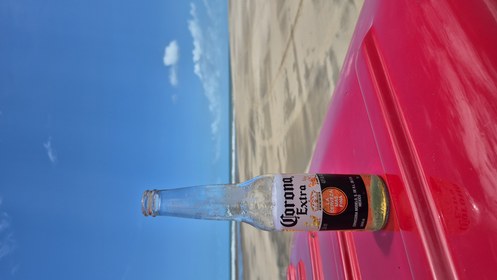
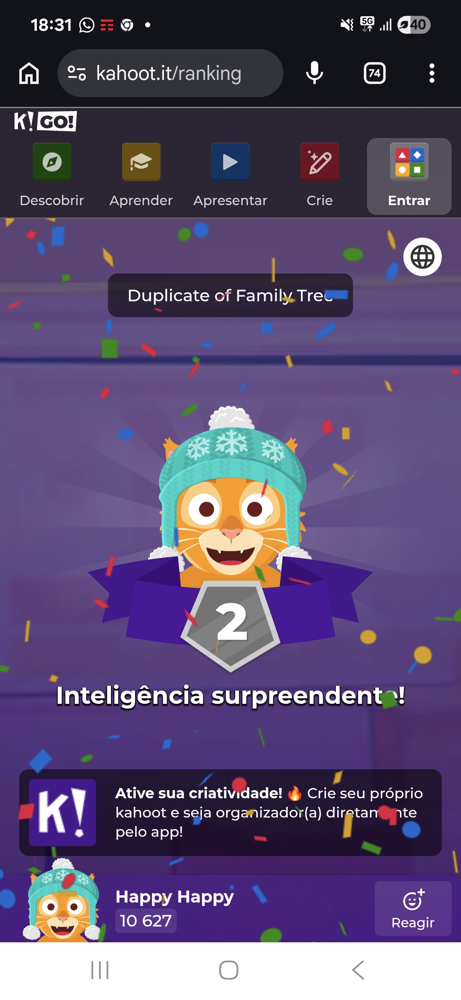
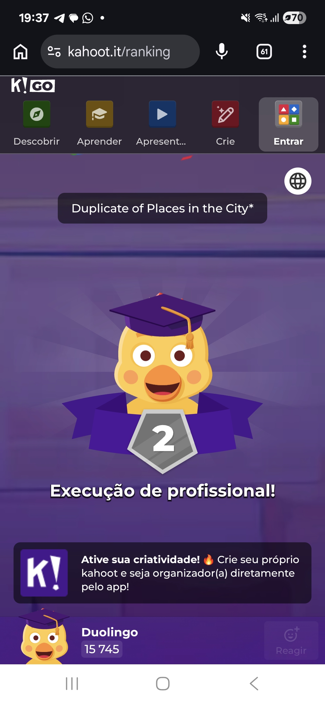
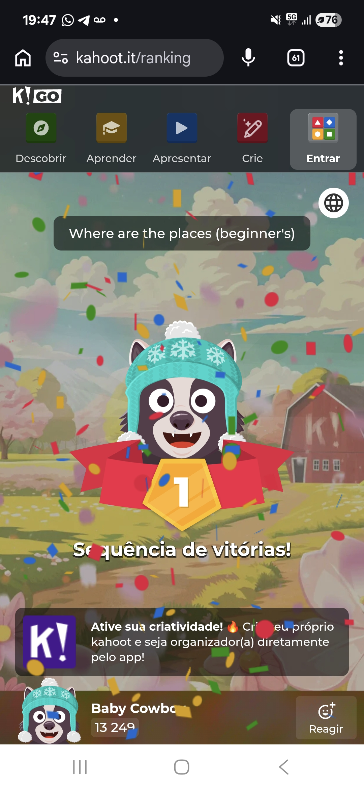
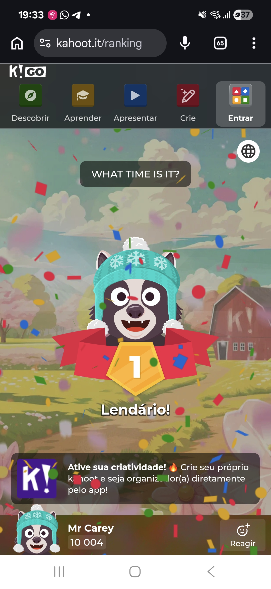
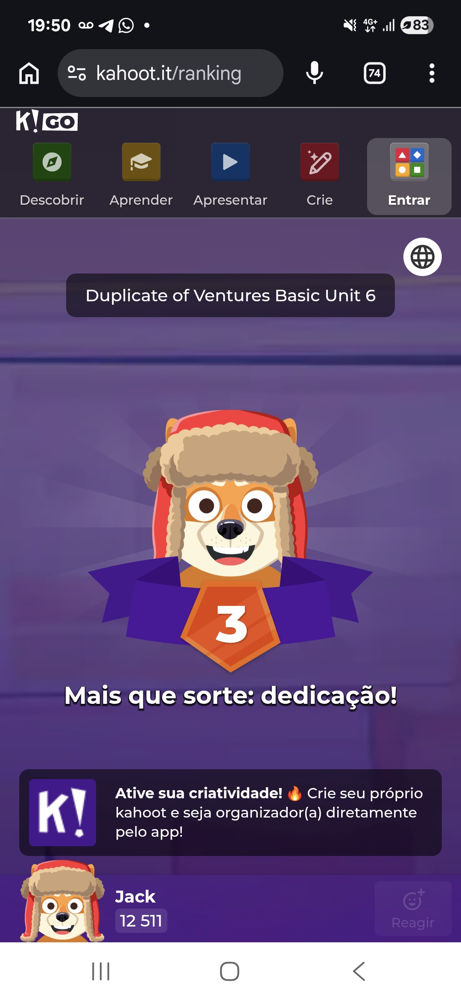
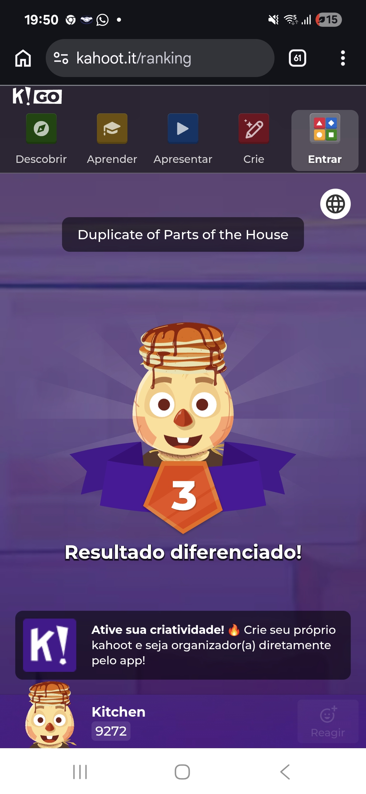
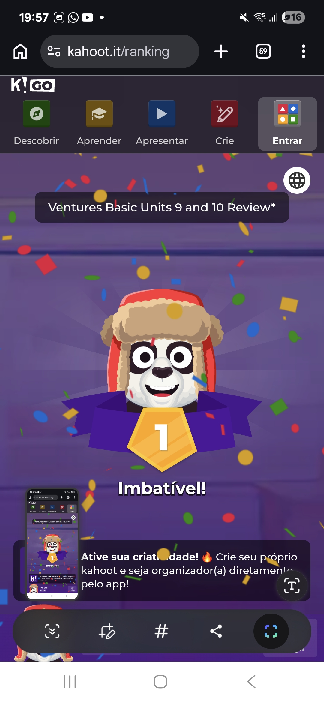

Learning with identity
This portfolio is not only a list of exercises. It connects each unit to my life, my routine, my work, and my goals as an English student.
Units 1 to 10 • A clear and visual portfolio about my progress in English class
I am Eduardo, a software developer from Brazil. I enjoy technology, studying, music, and learning new things. I also like to travel and visit new places. Traveling helps me meet people, learn about different cultures, and practice English in real situations.
This website presents what I learned in Ventures Basic, Units 1 to 10. It includes vocabulary, grammar, short conversations, personal examples, class activities, and photos from my learning experience.

This portfolio is not only a list of exercises. It connects each unit to my life, my routine, my work, and my goals as an English student.
The project uses clear sections, cards, images, vocabulary chips, grammar examples, and reflections to make the presentation easier to follow.
My goal is to use English in class, at work, while traveling, and in daily situations. This portfolio shows my progress step by step.
In this unit, I practiced personal information. I learned how to introduce myself, ask about names and phone numbers, say where someone is from, use countries and months, and use possessive adjectives such as my, your, his, and her.
My first name is Eduardo.
My last name is Silva.
I am from Brazil.
I am a software developer.
My birthday is February 7.
I want to use English to grow my career and reach new opportunities.

ID: DEV-2026
Birthday: February 7
What’s your name? → My name is Eduardo.
What’s his name? → His name is Jack.
What’s her name? → Her name is Sara.
Where are you from? → I am from Brazil.
A: What’s your first name?
B: My first name is Eduardo.
A: What’s your last name?
B: My last name is Silva.
A: Where are you from?
B: I am from Brazil.
This unit helped me introduce myself with more confidence. I can now talk about my name, my country, and simple personal information in English. This is useful in class, at work, and when I travel.
In this unit, I practiced classroom vocabulary. I learned how to name school objects, ask what someone needs, describe where things are, and use in, on, and under.

I study English at school.
I need a notebook, a pen, and a dictionary.
My notebook is on the desk.
My pencil is in the desk.
The dictionary is under the chair.
My English class is important for my work and my travels.
Where’s my pencil? → It is in the desk.
Where’s my notebook? → It is on the desk.
Where’s my dictionary? → It is under the chair.
What do you need? → I need a pen.
A: What do you need?
B: I need a dictionary.
A: Here you are.
B: Thank you.
This unit is practical. It helps me understand classroom instructions and talk about the materials I use to study. It also helped me describe where things are, which is useful in many everyday situations.
In this unit, I learned how to talk about family members and relationships. I practiced asking and answering yes/no questions with have and writing simple sentences about my family.
My family is very important to me. This is my family. This is my mother. This is my father. I also have a nephew and a niece, and they are very special to me. My nephew is my sister's son, and my niece is my sister’s daughter.


Do you have a sister? → Yes, I do.
Do you have a brother? → No, I don’t.
Who is Vera? → Sam’s aunt.
Who is Habib? → My brother.
A: Do you have a sister?
B: Yes, I do.
A: What’s her name?
B: Her name is Diana.
This unit helped me talk about family relationships in simple English. I can describe family members, ask questions, and write short sentences about the people in my life. It is one of the most personal units because it connects language to identity and affection.
In this unit, I practiced health vocabulary. I learned body parts, health problems, how to say what hurts, and how to understand simple information at a doctor’s office.
My head hurts.
My hand hurts.
I have a headache.
I need medicine.
I go to the doctor’s office.
The nurse helps the patient.
What hurts? → My head hurts.
What hurts? → My feet hurt.
What’s the matter? → I have a cold.
What’s the matter? → I need a doctor.
A: What’s the matter?
B: My head hurts.
A: Oh, I’m sorry.
B: I need medicine.
This unit helped me talk about simple health problems in English. I can say what hurts and understand basic vocabulary at the doctor’s office.
In this unit, I learned places around town and how to describe location. I practiced using on, next to, across from, and between. I also learned transportation vocabulary.
The bank is on Main Street.
The library is next to the school.
The hospital is across from the supermarket.
The pharmacy is between the restaurant and the bakery.
I go to school by car.
I like to visit new places around town.

Where’s the school? → On Main Street.
Where’s the bank? → Next to the supermarket.
Where’s the restaurant? → Across from the bank.
Where’s the pharmacy? → Between the restaurant and the supermarket.
A: Excuse me. Where’s the library?
B: It is on Main Street.
A: Is it next to the school?
B: Yes, it is.
This unit is useful for travel and daily life. I can ask where places are, understand simple directions, and talk about transportation.
In this unit, I learned how to ask and tell the time. I practiced talking about events, appointments, schedules, invitations, and yes/no questions with be.

My English class is at 6:00 P.M.
My meeting is at 10:00 in the morning.
My appointment is at 2:30 in the afternoon.
My favorite TV show is at 8:00 at night.
I study English in the evening.
Today is a busy day.
What time is it? → It’s nine o’clock.
What time is the class? → At 6:30.
Is your class at 11:00? → Yes, it is.
Is your appointment at 12:30? → No, it isn’t.
A: What time is your class?
B: It is at 6:30 in the evening.
A: Is your meeting at 10:00?
B: Yes, it is.
This unit helped me talk about time and schedules. I can read invitations, talk about appointments, and organize my day in English.
In this unit, I learned clothing items, colors, prices, and shopping language. I practiced asking and answering questions with How much is and How much are. I also practiced reading receipts and writing a shopping list.
I need a blue shirt and black shoes.
The T-shirt is $7.99.
The shoes are $29.99.
I like simple clothes for work and class.
I check the price before I buy clothes.
I can read a store receipt in English.

How much is the shirt? → It is $19.99.
How much is the sweater? → It is $31.99.
How much are the shoes? → They are $34.99.
How much are the pants? → They are $24.99.
A: How much is the T-shirt?
B: It is $7.99.
A: What color is it?
B: It is blue.
I can read a store receipt, identify the subtotal, tax, total, phone number, and clothing items. This is useful when I shop in English-speaking places or online.
This unit helped me use English in a store. I can ask prices, identify colors, talk about clothes, and prepare a simple shopping list.
In this unit, I learned common jobs, job duties, and workplace vocabulary. I practiced asking and answering questions with does and doesn’t. I also practiced reading help-wanted ads.

I am a software developer.
I work with technology and applications.
A cashier counts money.
A receptionist answers the phone.
A mechanic fixes cars.
I want to use English at work and in my career.
Does he sell clothes? → Yes, he does.
Does she answer the phone? → Yes, she does.
Does he clean buildings? → No, he doesn't.
What does Sandra do? → She counts money.
A: What do you do?
B: I am a software developer.
A: Do you work with computers?
B: Yes, I do.
I can read help-wanted ads and identify the job, schedule, phone number, email, and hourly pay. This vocabulary is important for professional situations.
This unit connects English to professional life. It helped me describe jobs, explain duties, and ask simple questions about work activities.
For my presentation, this unit is important because it connects English with work. I can talk about my job, other jobs, and the activities people do at work.
In this unit, I learned family chores, rooms of a house, and daily living vocabulary. I practiced asking What is he doing? and What are they doing? with the present continuous.
I am doing the laundry.
I am washing the dishes in the kitchen.
My family is doing chores on the weekend.
He is taking out the trash.
They are cleaning the house.
Daily chores help me organize my home.

What is she doing? → She is making the bed.
What is he doing? → He is washing the car.
What are they doing? → They are drying the dishes.
What are they doing? → They are taking out the trash.
A: What are they doing?
B: They are washing the dishes.
A: Where are they?
B: They are in the kitchen.
I can read a work order and understand names, addresses, dates, chores, and contact information. This helps with home services and daily organization.
This unit helped me describe what people are doing now. It is useful for home, family responsibilities, and everyday conversations.
This unit is practical because it talks about home responsibilities. I can describe chores and explain what people are doing right now.
In this unit, I learned free-time activities and how to talk about preferences using like to + verb. I also practiced reading a class flyer and talking about my day off.

I like to travel.
I like to go online and study technology.
I like to listen to music.
I like to watch TV at night.
I like to visit friends and family.
On my day off, I like to relax and learn new things.
What do you like to do? → I like to travel.
What do they like to do? → They like to play basketball.
What does he like to do? → He likes to exercise.
What does she like to do? → She likes to swim.
A: What do you like to do on your day off?
B: I like to listen to music.
A: Do you like to travel?
B: Yes, I do.
I can read a class flyer and identify the class name, dates, days, time, room, and price. This helps me find courses and activities in the community.
This unit helped me talk about hobbies and personal interests. I can explain what I like to do, ask other people about their free time, and talk about a day off.
This unit is personal because it talks about free time. I can share my hobbies and ask classmates about the activities they like.
Kahoot was an interesting, fun, and interactive activity in our English class. The game helped us review the content, practice vocabulary, participate with classmates, and learn in a lighter and more enjoyable way.
We reviewed vocabulary from the book in a fun way.
We answered questions and practiced English quickly.
We participated with classmates during the activity.
The game made the class more dynamic and interactive.
I learned that games can help students remember the content better.

I liked the Kahoot activity because it was simple, fast, and enjoyable. It helped me feel more involved in the class and more comfortable practicing English.






This section brings together some images used in the portfolio and class activity. The photos make the project more personal and visual.